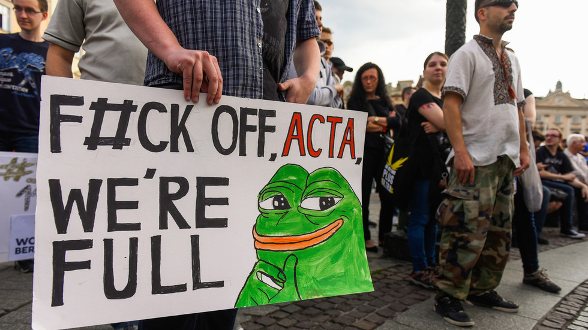
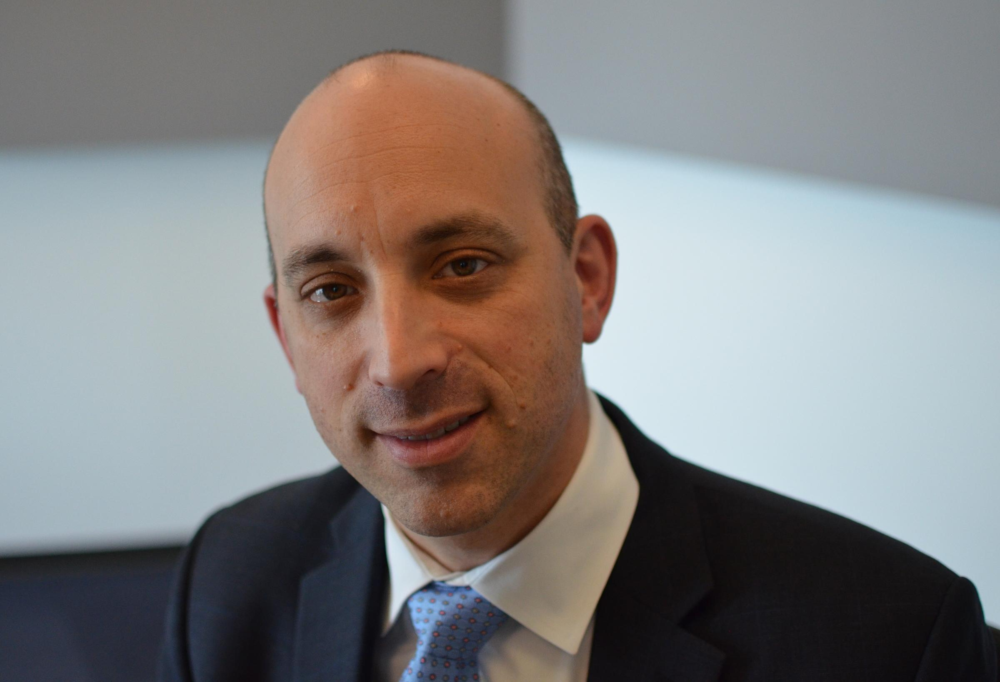

GLOBAL NEWS: Poland Passes Legislation to Fine Social Media Companies who Remove Non-Illegal Content
December 30st, 2020
Russia Today:
TDC_ARTICLE_START
Social media companies that remove posts whose content is legal can be fined up to €1.8 million under a new Polish bill. Users have welcomed its introduction as an antidote to other countries’ growing censorship demands.
Any social media company that removes content or blocks accounts that do not violate Polish law can be fined under the new legislation, announced in a press conference on Thursday by Justice Minister Zbigniew Ziobro. The bill also creates a special Court for the Protection of Freedom of Speech within one of the district courts.
Individuals whose posts have been censored will have the right to complain to the platform in question, which has 24 hours to respond. The user then has 48 hours to petition the new court to have their content reinstated, and the court then has seven days to consider the petition.
If the court finds in favor of the user and the social media platform does not restore the content or unblock the account, they will be fined up to €1.8 million by the Office of Electronic Communications. The whole process will happen online, according to Ziobro.
The victims of “ideological censorship” are unfairly quashed by social media platforms “just because they express views and refer to values that are unacceptable from the point of view of communities…with an ever-stronger influence on the functioning of social media,” the justice minister said.
TDC_ARTICLE_STOP
ACTA is relevant to Europeans, us not so much.
This is pretty great news, and is definitely the kind of legislation that any serious political party must propose. It's great precisely because there is no possible argument against it, other than "but muh lolbertarianism." The article continues with the joyous celebrations of many twitter users, but of course it does, this is 90% popular.
TDC_ARTICLE_START
And several users simply tagged US President Donald Trump, who has vowed to veto the National Defense Authorization Act if it does not include a provision to strip social media platforms of their Section 230 legal liability. Section 230 exempts social media platforms from legal responsibility for content posted by their users while still allowing them to moderate that content – a loophole its opponents have claimed enables ideologically-motivated censorship.
TDC_ARTICLE_STOP
Yeah Donald Trump is a complete and utter full of shit scammer. The ADL is pushing for this exact same policy. For those who don't know, Social Media corporations are currently protected from legal liability for the things that their users post. This is actually good. We don't want Twitter, or YouTube to have any excuse to be censoring videos for any reason. Stripping them of these protections gives them the reason.
ADL's Jonathan Greenblatt
As a result, there's going to be more censorship, if you can even imagine. And partly they want this to squeeze non-political content creators off the internet, and go back to a tightly controlled, three television channels type setup.
So basically what Poland is doing: fining tech for censorship, is great, what Donald Trump/the ADL is doing, is absolute shit.